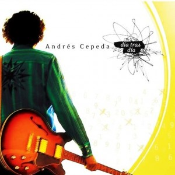

Exito # 1
Andrés Cepeda estrena este gran exito ‘Besos usados', el tercer sencillo del álbum ‘Día tras día' que salió al mercado el año pasado. La canción se estrena luego de ‘Día tras día' y ‘Enfermedad de ti'.

Exito # 2
Día Tras Día es el quinto álbum del cantante colombiano Andrés Cepeda lanzado en toda Latinoamérica y España a finales del 2009. Llegó a la posición número uno en ventas en Colombia en poco tiempo. El primer sencillo de este álbum en Colombia, Perú, Ecuador y España fue «Día tras día».

Exito # 3
Andrés Cepeda obtuvo trece nominaciones y ganó dos Grammy Latino en la categoría de mejor álbum vocal pop Tradicional por "Lo mejor que hay en mi vida" en 2013 y en la categoría Mejor álbum Tropical tradicional en el 2019.